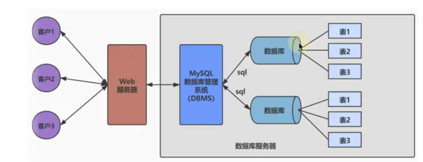
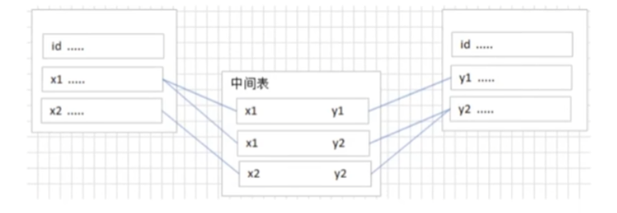
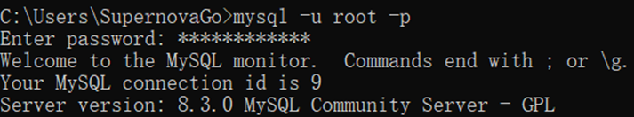
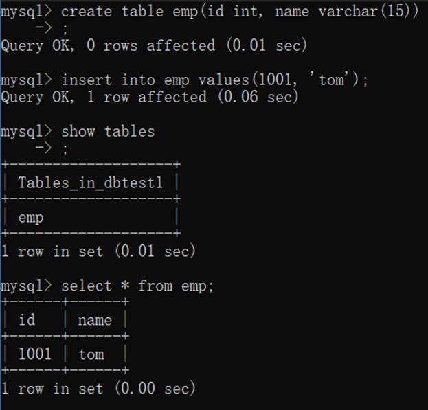
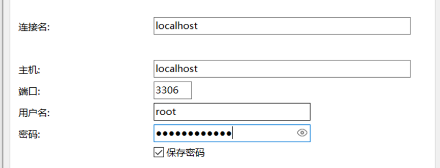
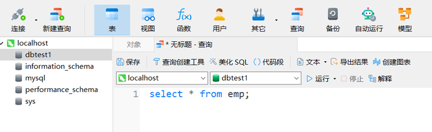

数据库（DB）是一个电子系统，用于存储、检索和管理数据，通常由数据库管理系统（DBMS）来管理，DBMS是一组软件程序，它们允许用户创建、修改、查询和维护数据库
DB：database，数据库本质是一个文件系统
DBMS：databse management system，数据库管理系统，MySQL、MongoDB等都是数据库管理系统，而不是数据库本身
SQL：结构化查询语言，是专门用来与数据库通信的语言

Oracle：甲骨文，是一个关系型数据库，最早且目前也最流行，大公司选择Oracle
MySQL：开源的关系型数据库，体积小速度快
MS SQL Server：关系型数据库
MongoDB：非关系型数据库
第一种情况，公司或者团体会混合使用很多种数据库，而很多数据是无法共存的，会引起冲突，轻的可能会降低I/O性能
第二种情况，数据库错乱或者升级，实体机很容易引起崩溃，还原或者重装都没有虚拟机方便
第三种情况，服务器里运行不止一个程序，数据库引起死机的话，其他程序跟着也都炸了
所以说建议数据库单独使用虚拟机，至于数据库文件可以放在宿主机里然后开SMB共享或者iscsi存储都可以
最古老的数据库类型，将复杂的数据结构归纳为简单的二元关系（即二维表格形式），以行（row）和列（column）的形式存储，称为表（table），一组表称为一个库（database）
表和表之前存在关系（relationship），用关系模型来表示，关系型数据库就是建立在关系模型上的数据库
优势：可使用SQL语句方便的在一个或多个表之前做非常复杂的数据查询
可看作RDBMS的阉割版，减少了很多组件，性能高
以下是 非 RDBMS 实现方式的代表：
基于文档：与键值对类似，但值是一个文件，代表MongoDB
基于键值对：使用key-value方式存储数据，key为唯一标识符，特点是查找速度快，但无法使用条件过滤（如where），代表Redis，常用于内存缓存的数据库
基于搜索引擎：使用索引提升检索效率
字段：或者说每条记录所具有哪些属性，如年龄、id等，即一列
记录：每行一条记录，代表一个“实体”的所有属性
表：多条记录构成一张表
一对一：表中的某条记录对应另一个表中的唯一一条记录，但实际用的不多，因为完全可以创建成一张表（字段合并），除非字段太多
一对多：如客户表和订单表，即一个客户可以有多个订单
多对多：多对多关系必须创建第三个表，称为联结表，它将多对多关系划分为两个一对多的关系。例如学生选课，有课程信息表、学生表，以及选课信息表作为联结表。需要将两个表的主键都插入联结表中，如下：

自我引用：表中某条记录和另一条记录相对应
需要先打开任务管理器并停止所有服务（可选），然后通过控制面板卸载，最后需要将环境变量删除
社区版是开源免费的，但企业版需付费
在download界面的下方选择社区版下载，然后选择mysql commuty server版本，并选择win版的msi安装版。安装后还需要进行配置
创建数据库
确认字段
创建数据表
插入数据
启动MySQL：需要启动服务器进程，否则客户端无法连接到数据库，当然在配置的时候也可以默认将MySQL服务端开机启动
有以下两种启动方式：
控制面板找到服务（或win+r并services.msc），找到MySQL的服务端，启用
命令行启动：net start MySQL服务名，停止：net stop MySQL服务名
这里的MySQL服务名是版本名称，如MySQL83
越精确的数据，所占用的字节数越大
整数类型：INT
浮点类型：FLOAT、DOUBLE
浮点数不精确，所以少用“=”来判断是否相等
定点数类型：DECIMAL
由于浮点数不精确，所以一般使用定点数表示小数，不过定点数在长度一定的情况下表示范围比浮点数小
日期类型：YEAR、TIME（时分秒）、DATE（年月日）、DATATIME（年月日时分秒）、TIMESTAMP（带时区）
字符串：CHAR（固定长度）、VARCHAR（可变长度）、TEXT（存储长文本）、BINARY
集合：SET
枚举：ENUM（仅能在所有情况中选出一种）
JSON：JSON对象，JSON数组
登录
mysql -u 用户名 -p
回车后输入密码，即可登录成功

退出：quit
通过端口号、ip地址区分不同主机、不同版本的MySQL管理系统
以下必须先登录才能运行
显示所有数据库：show databases;
注意s，以及末尾的英文分号（表示某条指令的结束）
创建database：create databse 名字;
创建表：create table 表名(字段1 类型, 字段2 类型…)
在此之前需要先选中要操作的表：use dbtest1;
给表中插入数据：insert into 表名 values(属性1, 属性2…)
展示所有的表：show tables;
查看表中条目：select * from 表名;

展示某个表的属性参数：show create table 表名;
删除数据库：drop database 名字;
MySQL Workbench是官方提供的图形化工具，但用的没有第三方的多，用的最多的是 navicat，不仅支持MySQL，还支持Oracle、mongodb等数据库，但是需要收费

如果是本机的话，主机就是localhost，否则填ip地址
这些命令一般是多行的、在图形化界面中使用的
CREATE DATABASE 数据库名字;
创建时可指定数据库的基本参数，如字符集
DROP DATABASE IF EXISTS 名字;
IF EXISTS是为了防止数据库不存在而报错
21USE 数据库名字;2CREATE TABLE 名字( 字段 …);示例：
51CREATE TABLE IF NOT EXISTS myemp(2id INT,3emp_name VARCHAR(15), # 必须指明字符串最大长度4hire_date DATA5);查看表结构：DESC 表名;
除此之外，还可以通过查询语句和CREATE一起创建带有数据的数据表：
31CREATE TABLE emp22AS select *3FROM emp1;添加字段
21ALTER TABLE emp12ADD salary DOUBLE(10,2);向emp1添加salary字段，该字段为共10位、小数2位的double型
修改字段
21ALTER TABLE emp12MODIFY emp_name VARCHAR(35) DEFAULT 'aaa';主要是修改字段的类型、长度、默认值
重命名字段
21ALTER TABLE emp12CHANGE salary monty_salary DOUBLE(10,2);改了名字和类型
删除字段
21ALTER TABLE emp12DROP COLUMN salary;重命名表
21RENAME TABLE emp12TO emp2;删除表
DROP TABLE emp1;
清空表：清空数据，但表结构保留
TRUNCATE TABLE emp1;
Structure Query Language：结构化查询语言，是使用关系模型的数据库应用语言
以下SQL语句使用均基于Navicat

首先连接一个数据库，双击左侧的主机并选中一个数据库，新建查询。这里查询就是编写函数的地方，也是数据库的主要操作。查询可以作为一个文件保留下来
DDL操作一旦执行便不可回滚，DML默认也是不可回滚的，但支持回滚
主要针对数据结构，如database、table
create：创建
alter：修改
drop：删除
rename：重命名
truncate：清空
主要针对表中的记录，每次操作执行完后默认commit
insert：插入记录
一条条加入数据
81INSERT INTO emp12VALUES (1, "Tom", "2002-02", 3400);3
4或者：5
6INSERT INTO emp1(id, hire_time, salary, `name`)7VALUES (1, "2002-02", 3400, "Tom" ),8 (2, "2002-02", 3800, "Jerry" );其中第二种更灵活，只要先指定字段顺序。此外，不赋值的字段将成为NULL
将查询结果插入表中
41INSERT INTO emp1(id, name_id, salary, hire_date)2SELECT emp_id, last_name, salary, hire_date3FROM emp24WHERE department_id IN (60,70);注意字段必须一一对应
delete：删除
和truncate相比，delete from可以全部清除也可以部分清除数据，也支持回滚。两者都能保存表结构
21DELETE FROM emp12WHERE id = 1;update：修改（更新）
31UPDATE emp12SET hire_date = CURRENT_DATE(),salary = 60003where id = 5;select：查询，由于比较重要，下面单独介绍
commit：提交
提交之后数据就保存到数据库中，无法回滚或撤销
rollback：回滚
一旦执行，则可以执行数据的回滚，回滚到最近的一次commit后
savepoint：保存点
grant：赋予权限
revoke：权限回收
和一般编程语言类似，且每条语句以;结尾
Windows下大小写不敏感，但在linux下敏感
一般关键字、函数名都大写，数据库、表名、字段名等都小写
单行注释用 #，多行注释用 /* */
基于cmd：source 文件路径全名（不需要引号）
基于图形化界面：navicat中，右键左边的主机-运行SQL文件
select 字段 from 表名：可用 * 代替字段表示全部字段
多个字段可用 , 隔开：
21SELECT id, nameid, goods2from emp;若不取列的别名，则得到的结果的列名就是select后的表达式，例如MAX(id)
列的别名
21SELECT id emp_id, nameid, goods2from emp;选中id这一列后，在结果中用emp_id替代id作为新字段，可以用空格隔开也可以用AS，如下：
31SELECT id AS emp_id, nameid, goods2
3from emp;列的别名也可以用双引号引起来，且可以用中文。但别名是中文或别名中存在空格的情况下，需用双引号将别名引起来
列的别名只能在order by中使用，在where中无法使用，这是因为SQL语句不是从上往下运行的
查询且去除重复行
SELECT DISTINCT id from emp;
将结果去除id的重复行
空值（null）参与运算
null不等于0
SELECT id, salary "月工资", salary*(1+commission) * 12 "年工资" from emp;
注意若存在空值参与运算，则结果也一定是null，此时可使用替换语句
SELECT id, salary "月工资", salary*(1+ IFNULL(commission,0)) * 12 "年工资" from emp;
着重号（反引号）：``
着重号和转义字符 / 的作用一致，当表名、属性名字和关键字相同时，需要“转义”
SELECT * FROM ` order `;
查询常数
查询时可额外加入一行完全相同的列（常数）
显示表结构
DESCRIBE emp;
显示表中字段的详细信息
过滤数据
21SELECT * from emp2WHERE department = 90;用 where 关键字选出department=90的记录，注意where必须放在from的后面且必须紧邻
歧义问题
若某个属性在多个表中都存在，则必须指明是哪个表
21SELECT emp.employee_id2from emp;+ - * / 或 div % 或 mod 取模
SELECT id, id*10, id+20, id /2 from emp;
一般运算符和Python中完全一致，如!=、<=、>=、>、<，并返回true（1）或false（0）
注意在mysql中 = 就是判断是否相等，而不是 ==
字符串存在隐式转换，当转换数值不成功，则看作0，例如0 = 'a'无法转换成数值（不转化成ASCII码），则看作0.若'1'则可以转化成1
只要有NULL参与运算，结果均为NULL，包括NULL=NULL同样是NULL
select * from emp WHERE id=NULL;
id=NULL会返回NULL，故此语句不会返回任何记录，需要用isnull或is not null 或 安全等于
安全等于：<=>
<=>和=的区别在于，null<=>null 返回的是1而不是0
其它比较运算符关键字
isnull：判断是否是null
least：返回最小值
SELECT LEAST(value1,value2,...) from emp;
values是字段名字
greatest：返回最大值
where…between…and：查询在某一范围的值（均为闭区间）
WHERE id BETWEEN 1000 AND 2000;
WHERE id >=1000 && id <= 2000; ——等价
可使用一个集合辅助：WHERE id in (100,200,300);
查询id中包含 'a' 字符的记录
WHERE id LIKE '%a%';
%表示不确定个数的任意字符
_表示占位一个任意字符
WHERE id LIKE '_a%';
查找id中第二个字符是 'a' 的记录
若想要查找%或_的字符，可以使用转义字符\
WHERE id LIKE '\_a%';
查找id中以 '_a' 开头的记录
not 或 !
and 或 &&：比or优先级高
or 或 ||
xor异或：相同则为0，不同则为1
&、|、^、~、>>、<<
SELECT id from emp ORDER BY salary DESC; # 降序排列，ASC是升序
不加后面的关键字，则默认升序排列
二级排序（多列排序）：
31SELECT id2from emp3ORDER BY salary DESC, id ASC; # 二级排序分页是防止数据过多，每次只需显示一部分即可
31SELECT id2FROM emp3LIMIT 0,20; # 显示20条记录，且偏移量从0开始第二个参数表示显示几条，而不是末尾偏移量
第一个参数默认为0
也称关联查询，是指两个或更多个表一起完成查询操作
前提：一起查询的表之间是有关系的，一定的关联字段
用传统方法多表查询也能达到目的，但需要多次select，开销较大
多表确实可以合成一张表，但会有很多冗余数据，维护也复杂
笛卡尔积（交叉连接）：两个集合X、Y，若X中的每个元素都和Y中的每个元素都有关系，则X、Y的元素组合的情况的个数就是笛卡尔积，其实就是 X个数*Y个数。多表查询时若缺少连接条件，则会出现笛卡尔积错误
41SELECT employee_id, department_name2from employees, departments3# 下面是连接条件4WHERE employee.department_id = departments.department_id;多表查询的结果，就是笛卡尔积中的所有结果，再加上连接条件的筛选，符合条件的记录是多个表中字段的结合
建议多表查询时，都指明字段来自哪个表，这也是一种优化
和列的别名类似，但表的别名在from语句中定义的，所以可以在where中使用，但起别名后必须用别名，包括select、where等语句
31SELECT emp.employee_id, dep.department_name2from employees emp, departments dep3WHERE emp.department_id = dep.department_id;等值连接、非等值连接
用=定义连接条件是等值连接，而连接条件中存在不等关系则为非等值
自连接、非自连接
自连接是自己表和自己表相连接，非自连接则是多个不同的表
31SELECT emp.employee_id, dep.department_name2from employees emp, employees dep3WHERE emp.department_id = dep.department_id;如上，一张表可以起两个别名，相当于复制了一份，再连接
内连接、外连接
内连接：只查找两个集合的交集
关键字：INNER JOIN…ON 两表条件
31SELECT last_name, department_name2FROM employees e INNER JOIN departments d3ON e.department_id = d.department_id;外连接：查找两个集合的合集，其中满外连接是并集，而左（右）外连接只包含交集和左（右）表中的数据，此时左（右）表为主表，右（左）表为从表
关键字：LEFT JOIN、RIGHT OUTER JOIN、FULL OUTER JOIN
为了保证数据完整性（准确性和可靠性），SQL规范以约束（constraint）的方式对表数据进行额外的条件限制，是表级的强制规定（对字段约束）
非空约束，某个列的值不允许为空
创建约束
41CREATE TABLE test1(2id INT NOT NULL,3email VARCHAR(25)4);表在创建后更改约束（下面几个约束也是类似的）：
21ALTER TABLE test12MODIFY email varchar((25) NOT NULL;删除约束
21ALTER TABLE test12MODIFY email varchar((25) NULL;唯一性约束，某个字段的值不能重复
41CREATE TABLE test1(2id INT UNIQUE,3email VARCHAR(25)4);注意：null值可以多个存在
要删除唯一性约束，需要删除唯一性索引
主键约束，用于区分不同的行，类似于id的性质，一个表只能有一个主键，主键用于区分唯一的行
41CREATE TABLE test1(2id INT PRIMARY KEY,3email VARCHAR(25)4);外键约束，限制某个字段的引用完整性
检查约束，检查某个字段的值是否符合xx要求
41CREATE TABLE test1(2id INT CHECK(salary > 5000),3email VARCHAR(25)4);默认值约束，用于设置默认值，若insert新数据时没有给某字段约束，且该字段设置了默认值约束，则填充默认值而不是NULL
41CREATE TABLE test1(2id INT DEFAULT 2000,3email VARCHAR(25)4);
视图（view）是一个或多个数据表里的数据的逻辑显示（虚拟表），视图不存储数据
解决了字段敏感的问题，例如某些字段只能由高管查看，一张表可以做出多个视图，以给到有不同权限的人操作
可理解为保存起来的select语句
小型项目可以不用视图，但大项目就十分有必要
更改表中的数据会导致视图数据修改，视图数据修改也会导致原表的数据修改
视图是一张伪表，其基本操作和表的操作类似，只需要把关键字TABLE换成VIEW即可
视图操作简单，一般不做增删改操作而仅查询，能减少数据冗余，也能确保数据安全；表结构更改时视图也需要相应的维护
41CREATE VIEW view12AS3SELECT salary, goods4FROM emp;基于多表查询的视图创建：
51CREATE VIEW view12AS3SELECT e.employee_id, e.department_id, d.department_name4FROM emp e JOIN dep d 5ON e.department_id = d.department_id;
使用DECLARE声明
系统变量：非用户定义，属于服务器层面，要么是MySQL的默认值，要么是配置文件，使用@@修饰
global变量，全局有效（所有连接和会话），比如一些配置文件
session变量，只在当前连接会话有效，当结束会话就失效了
自定义变量：
会话用户变量，使用@修饰，只在当前连接会话有效，和session变量一致
局部变量，只在begin-end块内部有效，即只能在存储过程和存储函数中使用
事先定义程序执行过程中可能遇到的问题
将错误名字和指定的错误条件关联起来，相当于给错误码命名
定义了在遇到特定问题时所采取的特定处理方式
处理方式：
CONTINUE：遇到错误继续执行，不处理
EXIT：遇到错误马上退出
UNDO：遇到错误后撤回之前的操作，但MySQL中暂不支持这一操作
顺序、分支、循环三大流程，所有编程语言通用
IF…THEN…、CASE：分支结构
91IF age > 402THEN SELECT "中老年";3ELSEIF age > 184THEN SELECT "青壮年";5ELSEIF age > 86THEN SELECT "青少年";7ELSE8SELECT "婴幼儿";9END IF;而case…when…then…结构类似于switch语句（第一种），也可类似于多重if（第二种）
LOOP、WHILE、REPEAT：循环结构
LEAVE、ITERATE：跳转结构
使用DECLARE声明
提供了一种方便的方式，使得对结果中的每一条记录进行定位，使得可以逐行处理
游标使用步骤：定义、打开、使用、关闭
用于提高查询性能，相当于目录
存储过程：相当于一系列有关存储的SQL函数，存储在服务器上且已经提前编译了
存储函数：有返回值的存储过程
存储过程和存储函数维护困难，可移植性差，有的企业并不推荐使用
触发器（trigger）相当于一个事件监听器，当特定事件发生后，触发器被触发，完成相应的处理，比如两个表，其中一个表插入后，可自动触发给表2也插入一条记录
使用CREATE、SHOW、DROP分别创建、查看、删除触发器
优点：可保证数据完整性、可帮助记录操作日志
缺点：可读性差，由于是事件触发的，可能不受应用层的控制
SQL中同样有函数，也有内置函数和自定义函数，函数的意义与其它编程语言一样
注意：我们使用不同的DBMS来和SQL打交道，但不同DBMS中函数差异很大，SQL语言的可拓展性非常差，需要特别注意，如MySQL和Oracle中的SQL语句就有很大不同
只对一行进行变换，每行返回一个结果。单行函数可以嵌套，即函数中可包含函数
数值函数：
ABS、SIGN、PI、CEIL、FLOOR、LEAST、GREATEST、MOD、RAND、ROUND、SQRT
三角函数：如SIN(x)，注意x为弧度制
进制转换：BIN、HEX、OCT等
字符串函数：
ASCII、LENGTH、CHAR_LENGTH、CONCAT、INSERT、UPPER、REPLACE、LOCATE等，和Python非常像
注意LENGTH是存储时占用几字节，一个汉字三字节（UTF8），而CHAR_LENGTH才是计数字符长
字符串索引从1开始
日期和时间函数
CURDATE、CURTIME、NOW、YEAR(date)、MONTH、DAY、HOUR、MINUTE、SECOND等
流程控制函数
IF(value,value1,value2)
如果value为true，则返回value1，否则返回value2
类似三目运算符
IFNULL(value1,value2)
如果value1不为NULL，则返回value1，否则返回value2
CASE WHEN THEN…WHEN…THEN…….END
类似于多分支语句if…else if….else
加密解密函数、其他函数
可以对多行进行处理，得到一行结果
常见聚合函数：AVG、SUM、MAX、MIN、COUNT
SELECT COUNT(employ_id) FROM emp;
计数employ_id的个数
GROUP BY：将表中的数据分成若干组
31SELECT department_id, AVG(salary)2FROM emp3GROUP BY department_id, job_id;按多个列进行分组，GROUP BY放在FROM、WHERE后面
注意：select中的字段，除了组函数(如AVG(salary))，必须出现在GROUP BY当中，但反之不一定。
HAVING：用来过滤数据
如果过滤条件中使用了聚合函数，则必须用having替换掉where，且having必须放在GROUP BY后面
41SELECT department_id, AVG(salary)2FROM emp3GROUP BY department_id4HAVING MAX(salary) > 10000;注意：HAVING适用性更广（组函数使用频繁），但WHERE执行效率更高
查询语句嵌套在另一个查询语句内部的查询，诸如先查询得出一个结果，然后根据这个结果再次查询得到最终结果
用多次查询或自连接也能达到相同效果，但效率不高，如下：
51# 查询表中比xxx工资高的人（自连接）2SELECT last_name, salary3FROM emp e1, emp e24WHERE e2.salary > e1.salary5AND e1.last_name = 'xxx'71SELECT last_name,salary2FROM emp3WHERE salary > (4 SELECT salary5 FROM emp6 WHERE last_name = 'xxx'7);单行子查询：仅返回单行数据
多行子查询：返回多行数据